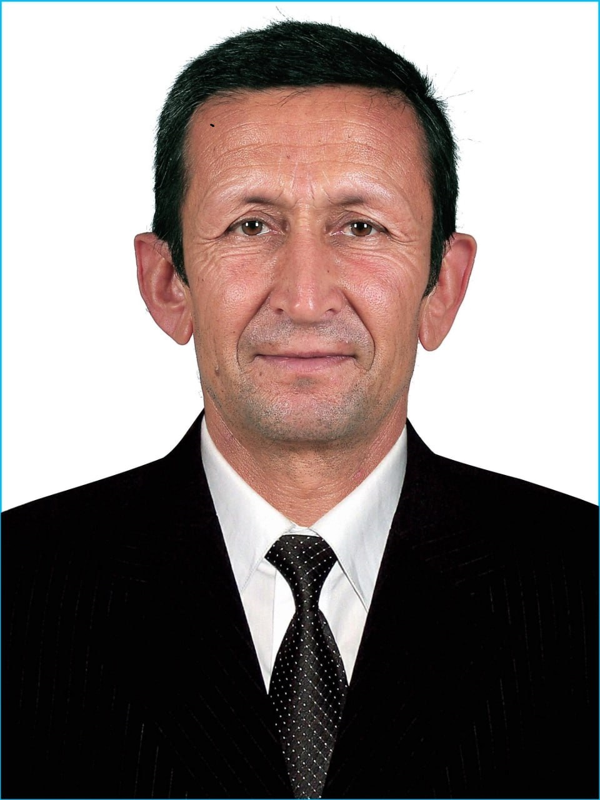
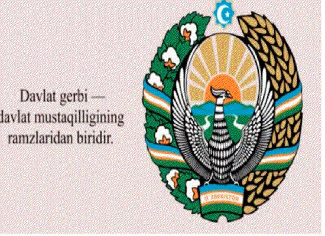
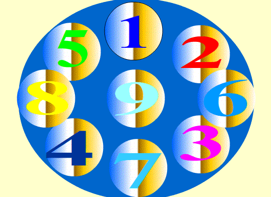

Informatika va axborot texnologiyalari

Informatika va axborot texnologiyalari fani o'qituvchisi.

Ta'lim jarayonida zamonaviy axborot texnologiyalaridan foydalanish.

O'quvchilar uchun elektron darsliklar va interaktiv ta'lim materiallarini yaratish.